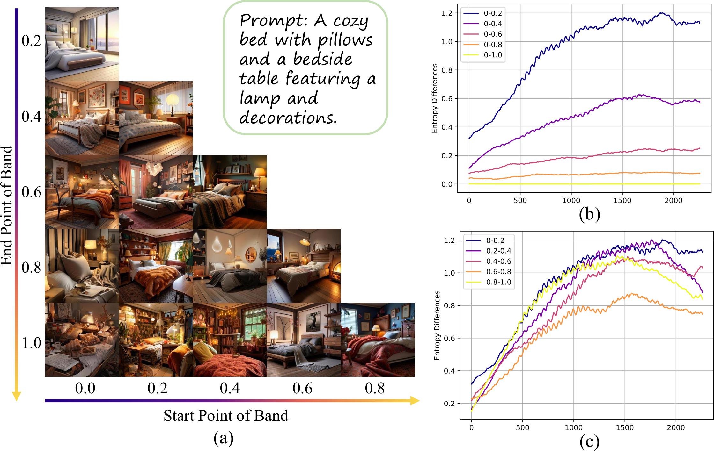

Abstract
Classifier-free guidance (CFG) has become a widely adopted practice for enhancing generation quality and improving condition alignment. Recent studies have explored guidance mechanisms for unconditional generation, yet these approaches remain fundamentally tied to assumptions specific to diffusion models. In this work, we propose a spectrum weakening framework for visual autoregressive (AR) models. The method is training-free and condition-free, constructing a controllable weak model in the spectral domain without architectural modifications. Specifically, we selectively retain spectral components along the channel dimension of internal representations to weaken features without requiring a complete spatial layout. We further apply spectrum renormalization to maintain feature scales during generation. Comprehensive empirical and ablation studies confirm the effectiveness of our approach, including raster-scan, random-order, and scale-wise AR, spanning discrete and continuous modeling and covering class and text-condition scenarios, demonstrating high-quality unconditional generation and strong prompt alignment for conditional generation.
Spectrum Analysis


The left panel varies the start and end points of the retained spectral band. Narrower bands generally create a larger entropy gap between the weak and base branches, as shown in the upper-right plot. Shifting a band while keeping its width fixed has a smaller effect, as shown in the lower-right plot. Entropy difference is measured as the weak branch minus the base branch.


BibTeX
@article{wang2025guiding,
title={Guiding Visual Autoregressive Models through Spectrum Weakening},
author={Wang, Chaoyang and Yang, Tianmeng and Tong, Yunhai},
journal={arXiv preprint arXiv:2511.22991},
year={2025}
}